S01 · Cuốn sách thành điểm tựa
0.000–6.019s · PILOT: final rendered frame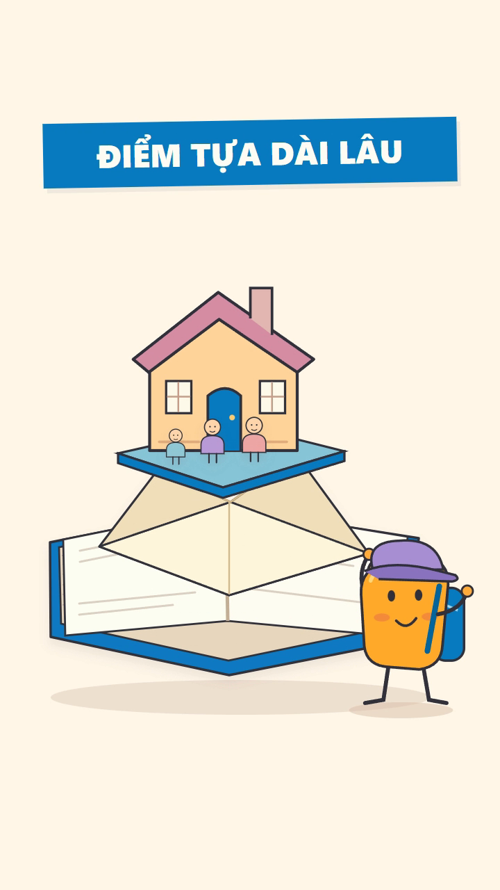
Hiểu: Việc học mở ra một kế hoạch dài hạn của gia đình, không chỉ một kỳ học.
Biến đổi: Bìa mở và các trang gấp bung thành mặt đỡ; mái nhà giấy và nhóm gia đình hiện lên trên mặt đỡ sau cụm “mà còn”. Tay nắm mép sách trước khi trang đổi hình.
Sang cảnh: Cắt theo ý sang cận vật liệu học phí; không kéo cùng căn nhà qua cảnh 02.
Packet chi tiếtS02 · Chi phí có trọng lượng
6.019–9.875s · ROUGH STAGING: not a production asset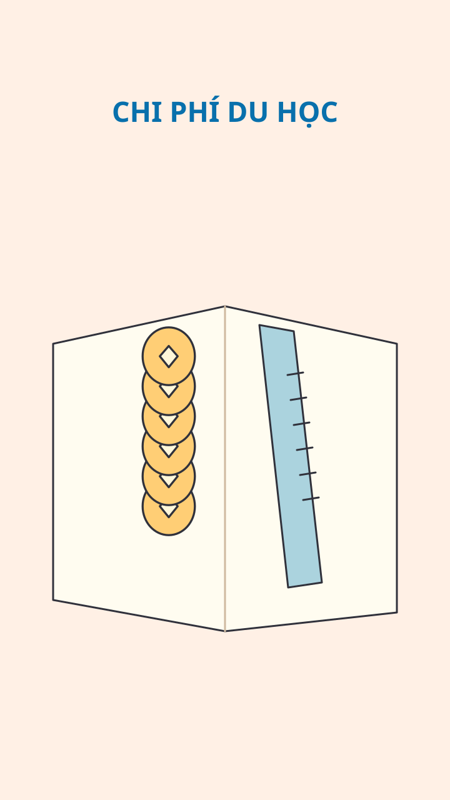
Hiểu: Gia đình đã dành nguồn lực đáng kể cho hành trình học tập.
Biến đổi: Các xu còn lại lăn vào cùng chồng làm giấy hơi võng; thước trượt qua chiều cao chồng xu theo cụm “hàng tỷ đồng”.
Sang cảnh: Mép sổ mở ra nhường màn hình cho kế hoạch dài hạn ở cảnh 03; cắt thẳng, không morph mọi đồ vật.
Packet chi tiếtS03 · Một hành trình nhiều năm
9.875–14.121s · ROUGH STAGING: not a production asset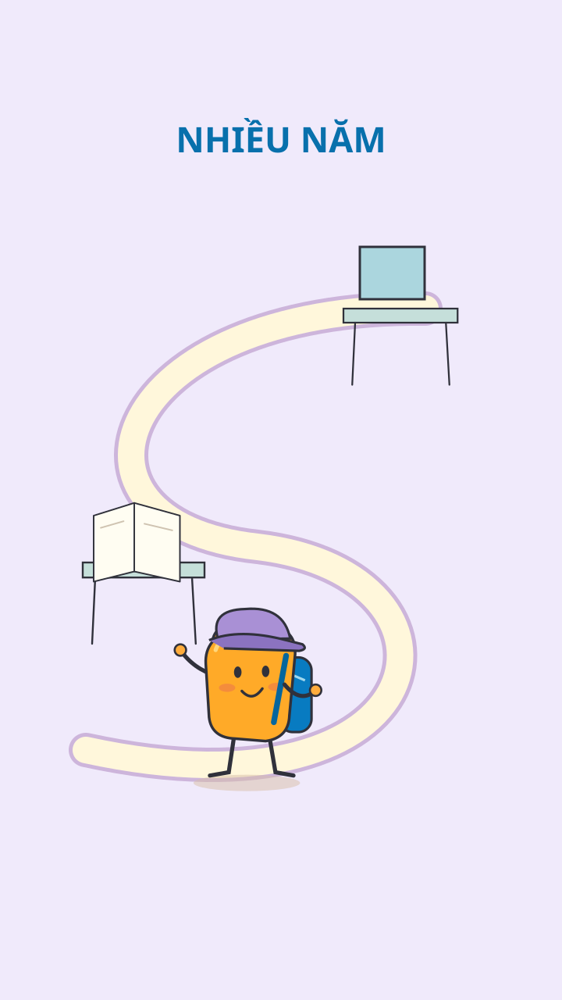
Hiểu: Học tập và sự nghiệp là một kế hoạch nối tiếp có khả năng thay đổi.
Biến đổi: Mascot mở nếp gấp; bàn học dựng lên trước, dụng cụ thực hành mở tiếp ở nửa sau, nhánh tương lai chỉ bằng nét đứt.
Sang cảnh: Cắt từ đầu đường chưa định sang câu hỏi tài sản ở cảnh 04.
Packet chi tiếtS04 · Tập trung vào một nơi?
14.121–18.151s · ROUGH STAGING: not a production asset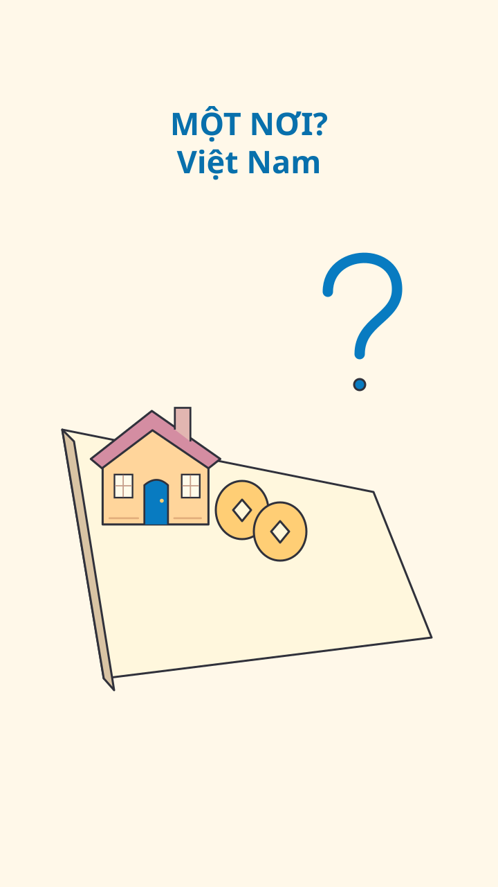
Hiểu: Câu hỏi về mức độ tập trung tài sản, không phải yêu cầu bán tài sản Việt Nam.
Biến đổi: Khay hơi nghiêng do tải lệch; dấu hỏi xuất hiện trong khoảng trống vừa mở. Không có đồ vật rơi hoặc cảnh khủng hoảng.
Sang cảnh: Cắt sang mặt giấy mới mở ở Malta. Không cho xu tự bay khỏi Việt Nam.
Packet chi tiếtS05 · Chọn địa điểm, thấy tài sản thật
Storyboard mới R1 — đã duyệt. Album v5 không được duyệt.
Mascot đặt ghim trên bản đồ Malta; tới “bất động sản”, cắt sang ảnh mặt tiền nhà thật. Không dùng album hay nhà biến hình. Chưa tạo frame/pilot mới.
Đọc kịch bản mớiS06 · Chỗ cho cả gia đình
23.858–29.654s · ROUGH STAGING: not a production asset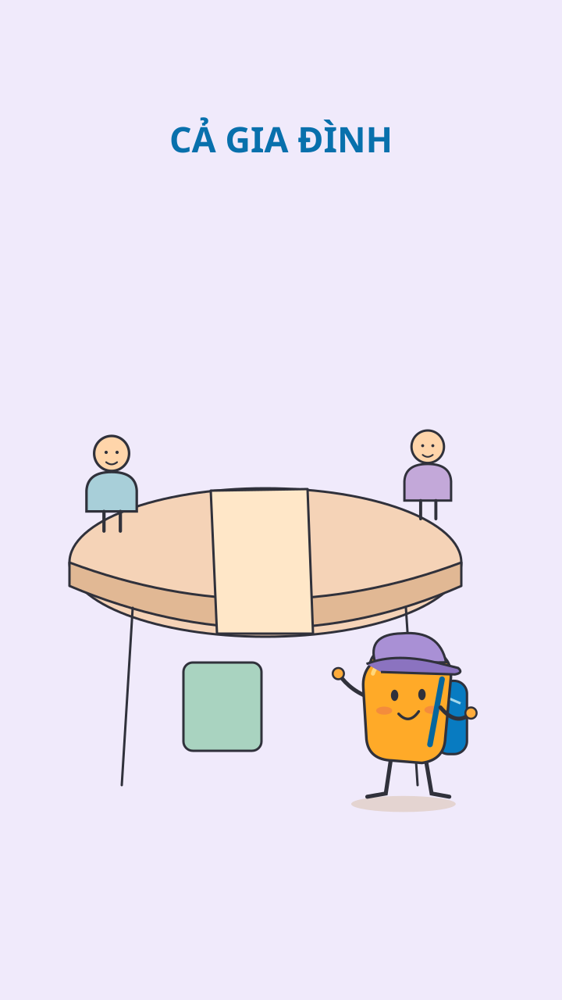
Hiểu: Một kế hoạch dài hạn được cân nhắc ở cấp gia đình.
Biến đổi: Mascot kéo lá bàn mở rộng; một chỗ ngồi mới vừa đủ hiện ra, mọi người xích lại chia sẻ bản kế hoạch không chữ.
Sang cảnh: Cắt cận mối kết nối ở cảnh 07, không dùng thêm thao tác mở đồ vật ngay đầu cảnh.
Packet chi tiếtS07 · Giữ một điểm kết nối
29.654–34.323s · ROUGH STAGING: not a production asset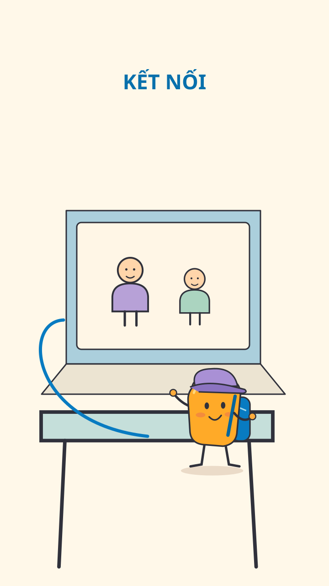
Hiểu: Gia đình có thể hoạch định kết nối với nơi con đang học.
Biến đổi: Cắm đầu dây → màn hình sáng với người thân giơ tay chào; mascot nhìn vào mắt người trong màn hình, một nét nối sáng ngắn xuất hiện theo tiếp xúc.
Sang cảnh: Lời chào dẫn bằng cắt cảnh sang cuộc gặp ngoài đời, không match cùng cánh tay.
Packet chi tiếtS08 · Đến gần những kế hoạch
34.323–39.800s · ROUGH STAGING: not a production asset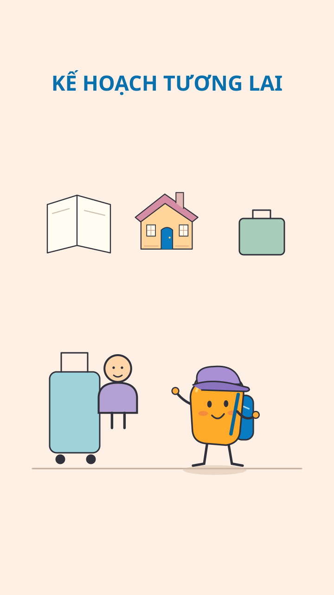
Hiểu: Thăm con và các dự định tương lai là những khả năng phải chuẩn bị riêng.
Biến đổi: Vali dừng → hai người chạm tay chào; ánh nhìn chuyển qua các đạo cụ gợi học/sống/việc làm, chỉ một đạo cụ được nhấn ở mỗi nhịp.
Sang cảnh: Cắt sang cơ chế phân bổ tài sản cảnh 09 để đổi chủ thể và nhịp hình.
Packet chi tiếtS09 · Phân bổ, không dồn một chỗ
39.800–47.251s · FRAME V2 ĐÃ DUYỆT · chuyển động chưa dựng
Chọn hình: Bàn gỗ, chốt chia, rãnh cong và nhóm tài sản nhiều lớp — frame v2 đã duyệt.
Hiểu: Đa dạng hóa là phân bổ mức tiếp xúc, không phải bảo đảm lợi nhuận hoặc xóa rủi ro.
Biến đổi: Các đồng trượt theo rãnh cong tới các bệ khác; camera giữ toàn cơ chế. Mỗi bệ vẫn có một dấu dao động ngắn riêng, không xuất hiện khiên/chốt bảo hiểm.
Sang cảnh: Cắt từ ba phân bổ sang nhóm gia đình ở cảnh 10. Không biến ba thị trường thành bốn thế hệ.
Packet chi tiếtS10 · Gia đình nhiều thế hệ — có điều kiện
47.251–53.408s · ROUGH STAGING: not a production asset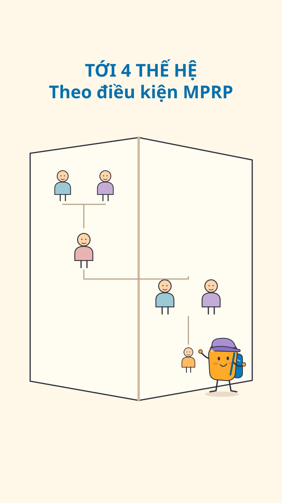
Hiểu: MPRP có thể bao gồm tới bốn thế hệ đủ điều kiện; con số khoảng 3,8 tỷ trong voice đã được chủ nội dung xác minh.
Biến đổi: Các nhánh gia đình mở lần lượt tới con, cha mẹ, ông bà. Tới cụm “4 thế hệ” mới đủ bốn cấp; ghi ngắn “Theo điều kiện MPRP”, không đóng dấu thông qua.
Sang cảnh: Lật sang mặt sau album như vật liệu giấy để cắt sang chuẩn bị cho con.
Packet chi tiếtS11 · Chuẩn bị thay vì chỉ sở hữu
53.408–60.220s · ROUGH STAGING: not a production asset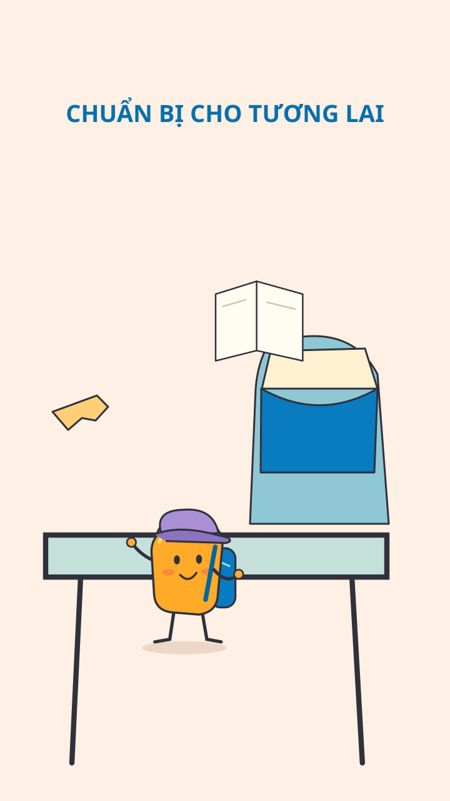
Hiểu: Trọng tâm chuyển từ một bất động sản sang sự chuẩn bị cho tương lai của con.
Biến đổi: Mascot đặt chìa khóa xuống rồi sắp vở vào ba lô; trọng tâm ánh sáng chuyển từ chìa sang những thứ đã chuẩn bị.
Sang cảnh: Cắt từ vật liệu vở sang môi trường cơ hội cảnh 12; không kéo cùng ba lô qua từng bước chân.
Packet chi tiếtS12 · Cơ hội có thể nắm bắt
60.220–63.751s · ROUGH STAGING: not a production asset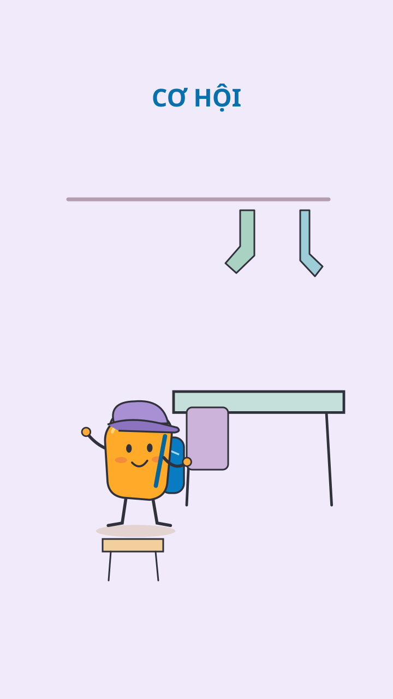
Hiểu: Thế hệ sau có thêm khả năng lựa chọn, vẫn cần nỗ lực và điều kiện.
Biến đổi: Mascot kéo ghế nhỏ đến gần rồi với lấy dụng cụ, bắt đầu thao tác ở bàn thực hành; nhấn hành động chủ động nắm cơ hội.
Sang cảnh: Cắt sang quy mô thế giới cảnh 13; thay tỷ lệ để không lặp cảnh nhân vật đi đường.
Packet chi tiếtS13 · Cùng mở tầm nhìn
63.751–68.304s · ROUGH STAGING: not a production asset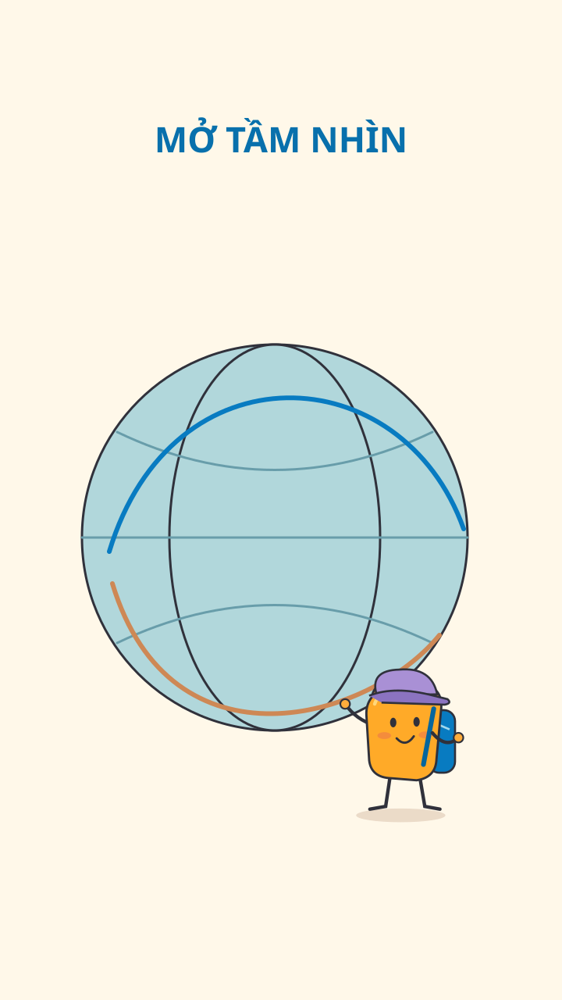
Hiểu: Việc con học ở nước ngoài gợi gia đình cân nhắc phạm vi hoạch định tài sản rộng hơn.
Biến đổi: Mascot xoay địa cầu để lộ phần còn lại; dấu học tập đi trước, dấu tài sản mở một hướng khác sau cụm “cũng có thể”.
Sang cảnh: Dừng chuyển động lớn, cắt cận bàn tay chọn ở cảnh cuối để hạ nhịp.
Packet chi tiếtS14 · Có thêm một lựa chọn
68.304–75.160s · ROUGH STAGING: not a production asset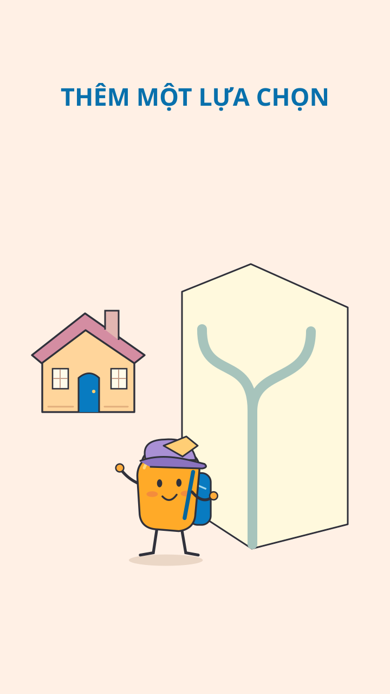
Hiểu: Giá trị kết luận là khả năng lựa chọn cho tương lai; không thêm lời kêu gọi mua.
Biến đổi: Mascot xoay lòng bàn tay đặt chìa xuống; tay kia mở một nếp bản kế hoạch để lộ nhánh lựa chọn còn trống. Không bước hẳn vào một cánh cửa.
Sang cảnh: Giữ kết quả tới 75.16s, không fade đen cắt đuôi voice.
Packet chi tiết